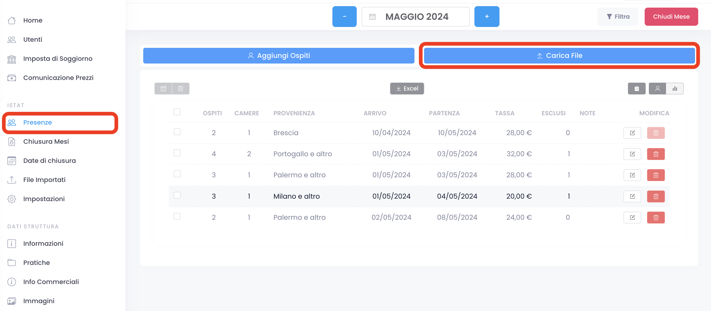
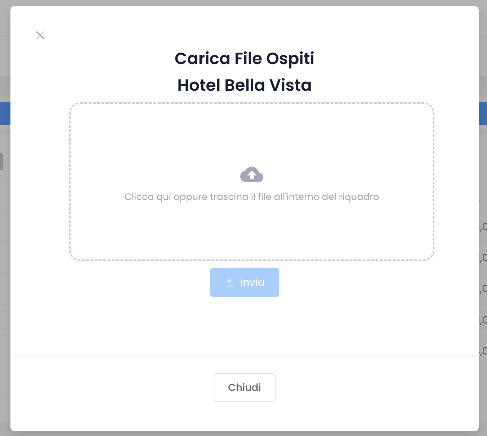
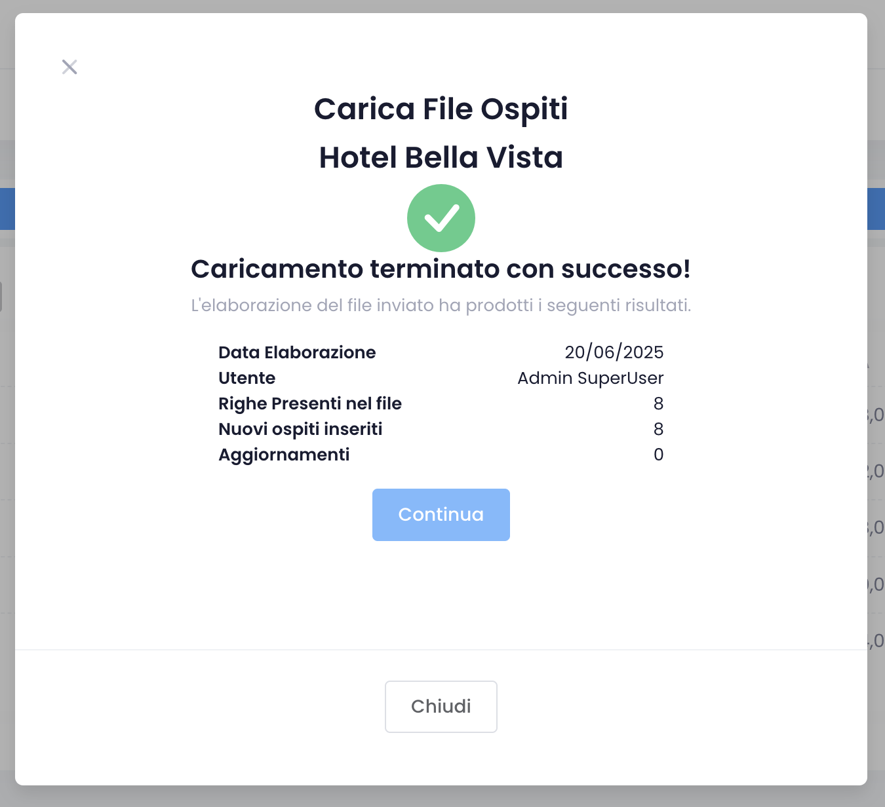
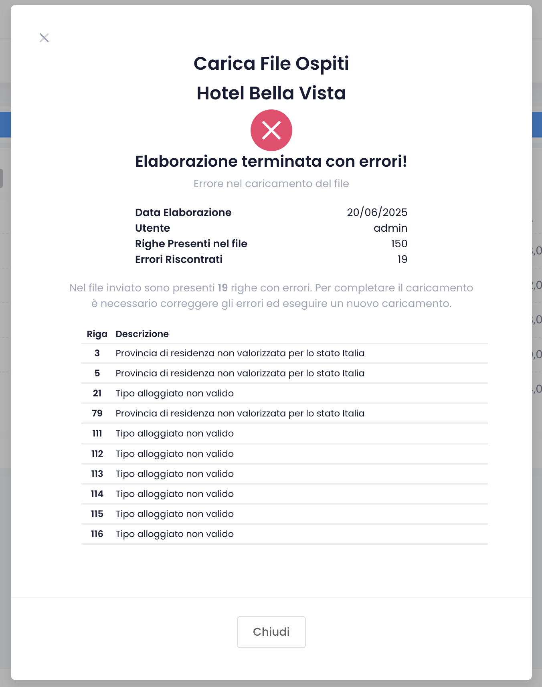

Integrazioni | PMS
Integrazioni | PMS
Comunicazione Dati ISTAT da Sistema Gestionale (PMS)
Gli operatori che utilizzano un sistema gestionale (PMS) per la gestione delle prenotazioni e degli ospiti, possono comunicare i dati ISTAT ad ABIT in due modi:
- Caricamento File ( File Upload )
- Comunicazione diretta tra PMS ed ABIT ( Web Service )
Con l'utilizzo della modalità File Upload il PMS genera un file che può essere scaricato e successivamente caricato in ABIT, mentre l'utilizzo della modalità Web Service permette al PMS di comunicare gli ospiti direttamente dal PMS ad ABIT senza bisogno di accedere a quest'ultimo.
Per comunicare i dati ISTAT ad ABIT è necessario che il PMS rispetti le specifiche tecniche dei tracciati definiti da ABIT. I gestori delle strutture ricettive che utilizzano PMS possono contattare l'assistenza dei loro fornitori per verificare la possibilità di utilizzare queste modalità di trasmissione ed avere supporto nella configurazione.
File Upload
L'abilitazione alla comunicazione degli ospiti mediante File Upload può essere fatta in autonomia nella sezione ISTAT > Impostazioni, selezionando il PMS utilizzato.
Per caricare un file, vai alla pagina di inserimento ospiti ( ISTAT > Presenze ) clicca sul pulsante "Carica File" e seleziona il file da caricare. Il file deve essere in uno dei formati accettati da ABIT ( vedi specifiche tecniche dei tracciati ) e deve essere generato dal PMS utilizzato.
Il caricamento del file può essere effettuato una volta al mese oppure con maggiore frequenza a seconda delle esigenze del gestore.
Non è possibile inserire nuovi ospiti nei mesi chiusi, se un ospite è già stato inserito con data di arrivo in un mese chiuso è sempre possibile inserire o modificare la data di partenza di ospite fino a quando anche la data di partenza non ricade in un mese chiuso.

Procedura di caricamento

Seleziona il file da caricare Non è necessario specificare il tipo di tracciato utilizzato, in quanto verrà riconosciuto automaticamente.
Il file da caricare ha estensione .txt
Privacy : ABIT non raccoglie i dati personali degli ospiti, i tracciati contengono alcuni campi che fanno riferimento a dati personali, come ad esempio Nome e Cognome dell'ospite. Questi campi devono essere sempre lasciati vuoti come indicato nelle specifiche dei tracciati.

Caricamento terminato con successo , il file è stato elaborato correttamente e i dati sono stati inseriti nel database di ABIT.
Nel caso in cui lo stesso file venga caricato più volte questo non comporta la duplicazione dei dati: se per un ospite vengono modificati alcuni dati (ad esempio la data di partenza), questi verranno aggiornati automaticamente.
Nel caso fosse stato caricato un file sbagliato è possibile chiedere la cancellazione di un intero caricamento contattando il consorzio turistico di riferimento oppure scrivendo a support@abit.so.it

Caricamento terminato con errori Per ogni errore viene indicata la riga del file che contiene l'errore, in modo da poterlo correggere facilmente.
Se il file contiene degli errori l'intero contenuto del file viene scartato, occorre correggere gli errori segnalati ed effettuare un nuovo caricamento.
Specifiche Tecniche dei Tracciati
Tracciato versione 5
E' la versione di riferimento utilizzata fino a metà 2024, è tutt'ora accettata ma in futuro verrà dismessa. Il file è file di testo con campi a larghezza fissa e contiene una riga per ogni ospite.
Tracciato versione 6
L'utilizzo del tracciato versione 6 permette di inviare i dati di più strutture utilizzando un singolo file e di comunicare il numero di camere occupate dagli ospiti. È la versione di riferimento a partire da metà 2024, è necessario che i PMS si adeguino al più presto. Rispetto al tracciato versione 5 richiede che nel PMS vengano configurati i codici delle strutture per le quali si intendono comunicare gli ospiti. I codici delle strutture si possono ottenere nella sezione ISTAT > Impostazioni di ABIT.
Tracciato ROSS 1000
ABIT accetta file in formato ROSS 1000 per la comunicazione dei dati ISTAT. Tuttavia, questi file non sono utilizzabili nei comuni che applicano l'imposta di soggiorno, poiché non includono la comunicazione della tipologia di esenzioni applicate.
Web Service
ABIT accetta la comunicazione degli ospiti mediante web service ed utilizza la stessa interfaccia esposta dal sistema ROSS1000 ( turismo 5 ver. 2.3 ). Per utilizzare questo metodo di comunicazione occorre configurare opportunamente il PMS. Invitiamo i gestori delle strutture ricettive a contattare l'assistenza del PMS per verificare la possibilità di utilizzare questo tipo di trasmissione, ed avere supporto nella configurazione del PMS.
Nello specifico occorre che vengano configurati i seguenti parametri:
- URL (endpoint)
https://abit.so.it/ws - Username utente applicativo che mette in collegamento il PMS ad ABIT
- Password
- Codici Struttura codici delle strutture per le quali si vogliono comunicare gli ospiti
- Codici Esenzioni codici delle esenzioni dal pagamento dell'imposta di soggiorno
Tutti i parametri sono disponibili nella sezione ISTAT > Impostazioni dove è possibile generare le credenziali applicative ( Username e Password ) necessarie per stabilire la connessione tra i due sistemi.

Nota : la procedura di generazione delle credenziali mostra la password solo la prima volta, successivamente la password sarà criptata. Si consiglia di copiare la password subito dopo la creazione, in quanto non sarà più possibile visualizzarla in seguito.
Imposta di Soggiorno
ABIT è la piattaforma utilizzata per la raccolta dei dati ISTAT in Provincia di Sondrio e per la rendicontazione dell'imposta di soggiorno in 16 comuni. Le strutture situate nei comuni che applicano l'imposta di soggiorno devono assicurarsi che il PMS trasmetta ad ABIT anche le informazioni relative alle esenzioni dal pagamento dell'imposta. Questo è fondamentale per consentire il corretto calcolo dell'importo dovuto per ciascun comune.
Ogni comune ha un proprio elenco di esenzioni, ognuna delle quali è associata ad un codice che dovrà essere configurato nel PMS. L'elenco delle esenzioni ed i relativi codici può essere consultato nella sezione ISTAT > Impostazioni di ABIT. In alternativa i codici sono disponibili pubblicamente al seguente indirizzo
https://abit.so.it/citytax/v1/esenzioni/<codice_istat_comune>/html
sostituendo il codice ISTAT del comune di riferimento.
Per comodità riportiamo di seguito l'elenco dei comuni che applicano l'imposta di soggiorno ed i link per consultare le esenzioni.
| # | Comune | Codice ISTAT | Esenzioni |
|---|---|---|---|
| 1 | Aprica | 014004 | Codici esenzioni | Codici Esenzioni JSON |
| 2 | Bormio | 014009 | Codici esenzioni | Codici Esenzioni JSON |
| 3 | Campodolcino | 014012 | Codici esenzioni | Codici Esenzioni JSON |
| 4 | Chiavenna | 014018 | Codici esenzioni | Codici Esenzioni JSON |
| 5 | Civo | 014022 | Codici esenzioni | Codici Esenzioni JSON |
| 6 | Forcola | 014029 | Codici esenzioni | Codici Esenzioni JSON |
| 7 | Livigno | 014037 | Codici esenzioni | Codici Esenzioni JSON |
| 8 | Madesimo | 014035 | Codici esenzioni | Codici Esenzioni JSON |
| 9 | Prata Camportaccio | 014054 | Codici esenzioni | Codici Esenzioni JSON |
| 10 | Sondalo | 014060 | Codici esenzioni | Codici Esenzioni JSON |
| 11 | Tirano | 014066 | Codici esenzioni | Codici Esenzioni JSON |
| 12 | Verceia | 014075 | Codici esenzioni | Codici Esenzioni JSON |
| 13 | Valdidentro | 014071 | Codici esenzioni | Codici Esenzioni JSON |
| 14 | Valdisotto | 014072 | Codici esenzioni | Codici Esenzioni JSON |
| 15 | Valfurva | 014073 | Codici esenzioni | Codici Esenzioni JSON |
| 16 | Valmasino | 014074 | Codici esenzioni | Codici Esenzioni JSON |
Chiusura Mese
L'operazione di chiusura mese deve essere sempre effettuata per ogni mese, indipendentemente dalla modalità di comunicazione dati adottata, entro il 5 del mese successivo.
Gli operatori che utilizzano la comunicazione tramite Web Service devono comunicare i dati anche nei mesi in cui la struttura è chiusa, ma non sono tenuti alla compilazione del calendario dei giorni di chiusura.